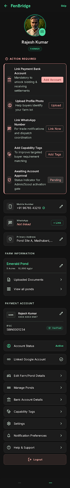
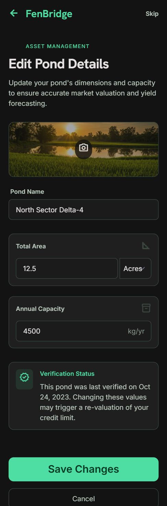
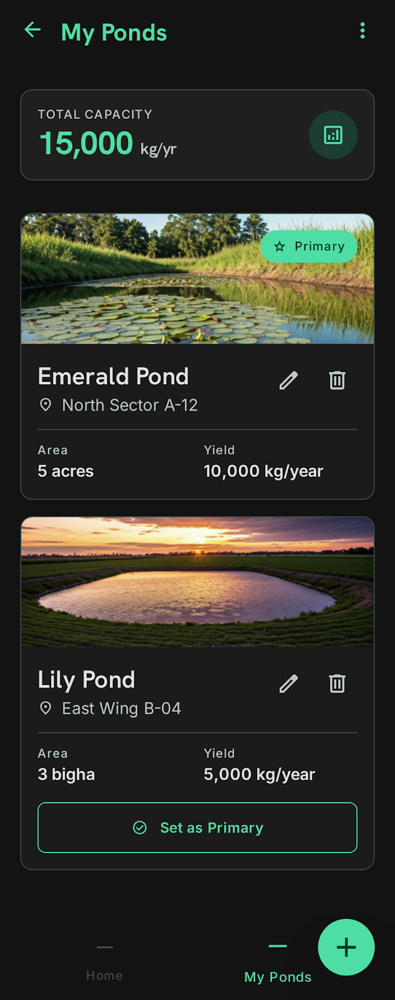
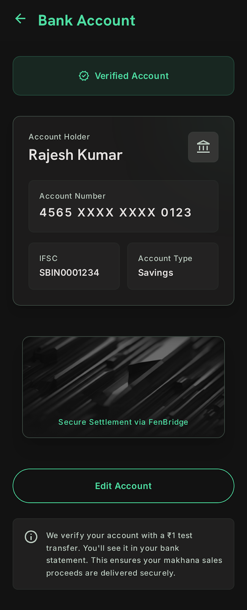
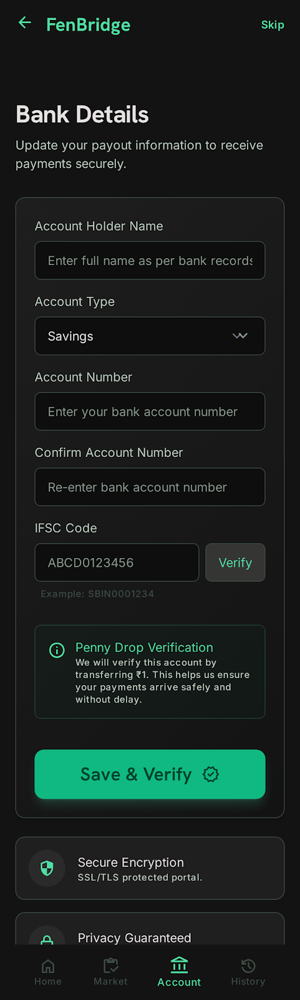
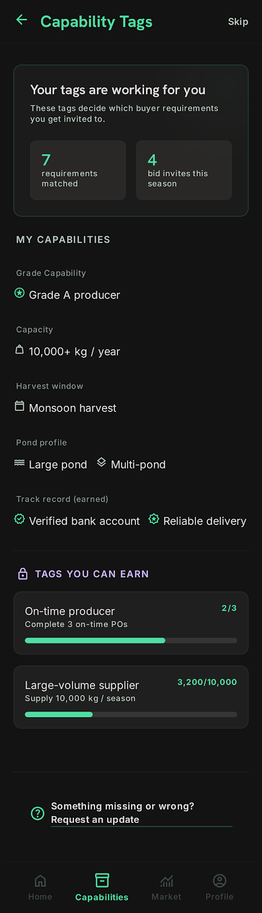

Screen 01
Farmer Profile Hub
farmer_profile

High-fidelity screen capture unavailable. Refer to source code directly.
Purpose
Central hub for farmer to view and manage account, ponds, bank account, and settings. Highlights outstanding action alerts for rapid compliance completion.
Business Requirement
Single source of truth for farmer's account and assets. Prompts critical missing data (Bank linkages, WhatsApp, Capabilities) to prevent transaction roadblocks.
User Experience (UX)
Scrollable view with avatar header, dynamic Action Required section highlighting pending profile prerequisites, inline-editable key fields, and modular navigation buttons.
User Actions
- Tap avatar to upload profile photo.
- Tap Action Required quick links (Add Account, Upload, Link Now, Add Tags).
- Tap inline edit buttons for Mobile, WhatsApp, or Address.
- Tap menu options to access dedicated sub-screens.
- Tap Logout.
Technical Details
- Avatar: stored securely at fenbridge/users/{user_id}/avatar.jpg.
- Action Required panel renders conditionally based on null status checks of linked bank records, uploaded avatars, verified chat endpoints, and capability array weights.
- Primary pond: query ponds table where user_id = current_user and is_primary = true.
- Bank account: query farmer_bank_account table.
- Inline changes auto-save silently via serverless sync.
Design Details
Header Section (surface-hi background):
- Avatar: 120 × 120 dp circle with floating camera overlay badge.
- Name: Title 2 with inline verified tag.
- Role pill: "Farmer" rendered in semi-transparent primary accent.
Section: Action Required (Prominent Warning Box):
- Header: "Action Required" heading coupled with warning icon in tertiary highlight.
- Container: Glass card styled with a left-bordered block accent.
- Item 1: Link Payment Bank Account (icon: account_balance) + CTA "Add Account".
- Item 2: Upload Profile Photo (icon: account_circle) + CTA "Upload".
- Item 3: Link WhatsApp Number (icon: chat) + CTA "Link Now".
- Item 4: Add Capability Tags (icon: loyalty) + CTA "Add Tags".
- Item 5: Awaiting Account Approval (icon: verified_user) + badge "Pending".
Section 1 — Contact & Location:
- Header: "Contact & Location" (Title 3).
- Row 1: Mobile icon + verified state badge + inline edit.
- Row 2: WhatsApp linked status indicator + explicit "+ Link" callout.
- Row 3: Primary Address truncated string preview + inline edit button.
Section 2 — Farm Information:
- Header: "Farm Information" (Title 3).
- Row 1: Pond title preview with dual inline pill metrics (Acres, Capacity).
- Row 2: Quick navigation menu expanding uploaded land deeds.
- Row 3: Secondary link opening complete multi-pond grid view.
Section 3 — Payment Account:
- Preview: Bank container previewing payee name, masked card sequence, and IFSC string alongside an active verified badge indicator.
Section 4 — Account Status:
- Displays operational active flag alongside active single sign-on linkages (Google).
Section 5 — Menu Buttons:
- Edit Farm/Pond Details (icon: agriculture).
- Manage Ponds (icon: water).
- Bank Account Details (icon: account_balance).
- Capability Tags (icon: loyalty).
- Settings (icon: settings).
- Notification Preferences (icon: notifications).
- Help & Support (icon: help).
- Logout (destructive filled outline style).
Bottom padding: 24 dp.
Database Schema
users (
id UUID PRIMARY KEY,
email VARCHAR(255) NOT NULL UNIQUE,
full_name VARCHAR(200) NOT NULL,
mobile_number VARCHAR(20),
avatar_url VARCHAR(500),
role ENUM ['buyer', 'farmer', 'scout'] NOT NULL,
status ENUM ['onboarding', 'pending_approval', 'active', 'suspended'] DEFAULT 'pending_approval',
theme_preference ENUM ['dark', 'light'] DEFAULT 'dark'
);
ponds (
id UUID PRIMARY KEY,
user_id UUID FOREIGN KEY,
pond_name VARCHAR(200) NOT NULL,
area_value DECIMAL(8, 2),
area_unit ENUM ['acres', 'bigha'],
estimated_annual_capacity_kg INT,
is_primary BOOLEAN DEFAULT false
);
farmer_bank_account (
id UUID PRIMARY KEY,
user_id UUID FOREIGN KEY UNIQUE,
account_holder_name VARCHAR(200),
account_number VARCHAR(20),
ifsc_code VARCHAR(11),
account_type ENUM ['savings', 'current'],
verified_at TIMESTAMP,
penny_drop_status ENUM ['pending', 'verified', 'failed']
);
Screen 02
Edit Pond Details
edit_pond_details

High-fidelity screen capture unavailable. Refer to source code directly.
Purpose
Edit primary pond information (name, area, capacity) or access from Manage Ponds to edit any specific pond.
Business Requirement
Allow farmer to correct/update pond details if they change area, capacity estimates, or pond name.
User Experience (UX)
Form with three text inputs (pond name, area value + unit dropdown, capacity). Save button.
User Actions
- Edit pond name.
- Edit area (value + unit dropdown: acres / bigha).
- Edit capacity (kg/year).
- Tap "Save Changes".
Technical Details
- If accessed from Farmer Profile: pre-fill from primary pond (is_primary = true).
- If accessed from Manage Ponds: pre-fill from specific pond_id.
- Validation: pond name (min 3 chars), area (> 0, numeric), capacity (numeric, > 0).
- On save: update ponds table + log audit event.
Design Details
Top bar: Back button, "Edit Pond Details" heading (Title 2).
Form:
- Input 1: "Pond Name" (text). Placeholder: "Your local name, e.g., Beel 1". Pre-filled.
- Input 2: "Area" (split input). Number field (pre-filled) + dropdown (Acres / Bigha, pre-selected). Helper: "How much land does this pond cover?"
- Input 3: "Estimated Annual Capacity" (number, pre-filled). Placeholder: "kg per year". Helper: "Help us understand your production capacity."
Action:
- "Save Changes" primary button (full-width).
Feedback:
- Toast on success: "✓ Pond details updated".
- Validation errors below each field (danger colour).
Database Schema
UPDATE ponds SET pond_name = $1, area_value = $2, area_unit = $3, estimated_annual_capacity_kg = $4 WHERE id = target_pond_id;
Screen 03
Manage Ponds
manage_ponds

High-fidelity screen capture unavailable. Refer to source code directly.
Purpose
View all registered ponds, add new, edit, delete, or set as primary.
Business Requirement
Farmer may operate multiple ponds. Admin and buyers need visibility into all ponds for capacity matching.
User Experience (UX)
List of pond cards with name, area, capacity. Primary badge. Buttons to set primary, edit, delete. FAB to add new.
User Actions
- View all ponds.
- Tap "Set as Primary" on any pond.
- Tap pond card to view details (optional).
- Tap edit icon to open Edit Pond Details form.
- Tap delete icon (with confirmation) to remove pond.
- Tap FAB to add new pond.
Technical Details
- Fetch all ponds where user_id = current_user.
- Only one pond can have is_primary = true.
- On set primary: update is_primary to false for all ponds, then set to true for selected pond.
- Add new pond: opens Pond Registration workflow (from onboarding).
- Delete: soft-delete (mark as deleted) or hard-delete with confirmation.
Design Details
Top bar: Back button, "My Ponds" heading (Title 2).
List of pond cards (surface background, border-hi, 12 dp padding, gap 8 dp):
Each card:
- Pond name (Title 3, text-hi).
- Area: "5 acres" (Body, text-md, 4 dp top margin).
- Capacity: "10,000 kg/year" (Body, text-md).
- If primary: "⭐ Primary" badge (accent, pill shape, top-right corner).
Action row (4 dp top margin):
- "Set as Primary" button (if not primary, info colour, secondary, 40 dp height).
- Edit icon (pen, secondary button, 40 × 40 dp).
- Delete icon (trash, danger colour on hover, secondary button, 40 × 40 dp).
FAB: "+ Add Pond" (accent, bottom-right).
Empty state: "No ponds registered yet. Add your first pond." + FAB button.
Delete confirmation sheet:
- Title: "Delete pond?" (warning tone).
- Message: "Are you sure? You can't undo this action."
- Two buttons: "Cancel" (secondary) | "Delete" (destructive, full-width).
Database Schema
// Transactional update sequence enforcing database constraints:
UPDATE ponds SET is_primary = false WHERE user_id = current_user;
UPDATE ponds SET is_primary = true WHERE id = selected_pond_id;
Screen 04
Bank Account Details
bank_account_details

High-fidelity screen capture unavailable. Refer to source code directly.
Purpose
View and manage bank account details used for payment settlement.
Business Requirement
Bank account is critical for FenBridge to remit payments to farmer. Account must be verified via penny-drop before farmer can transact.
User Experience (UX)
Display account summary (masked) with verification status. Edit button. Helper text about penny-drop process.
User Actions
- View account details (masked).
- Tap "Edit Account" to open edit form.
- On save, re-trigger penny-drop verification.
Technical Details
- Fetch farmer_bank_account where user_id = current_user.
- Display account_number (first 4 + last 4, middle masked).
- Display account_holder_name, ifsc_code, account_type.
- Display penny_drop_status: pending (⏳), verified (✓), failed (✗).
- Edit opens a form with fields: account number, IFSC, account holder name.
- On save, update farmer_bank_account + trigger penny-drop API.
- Penny-drop: ₹1 test transfer to the account. If successful, set verified_at timestamp and penny_drop_status = 'verified'.
Design Details
Top bar: Back button, "Bank Account Details" heading (Title 2).
Account Info Card (surface background, border-hi, 12 dp padding):
- Row 1: "Account Holder" label (Caption, text-md) → name (Body, text-hi).
- Divider (border, 8 dp margin).
- Row 2: "Account Number" label → masked (e.g., "4565 XXXX XXXX 0123") (Body, text-hi, mono font).
- Row 3: "IFSC Code" label → code (Body, text-hi).
- Row 4: "Account Type" label → savings/current (Body, text-hi).
- Divider.
- Row 5: "Verification Status" label → status pill.
- If verified: "✓ Verified" (accent colour).
- If pending: "⏳ Pending verification" (warn colour). Helper: "We're sending a ₹1 test transfer to your account. Check your bank statement in 1–2 days."
- If failed: "✗ Verification failed" (danger colour). Helper: "The test transfer failed. Please check your account details and try again."
Action:
- "Edit Account" secondary button (full-width, 56 dp).
Helper Text (below button, text-md, text-md):
"We verify your account with a ₹1 test transfer. You'll see it in your bank statement. Once verified, you can receive payments."
Database Schema
SELECT account_holder_name, account_number, ifsc_code, account_type, penny_drop_status
FROM farmer_bank_account WHERE user_id = current_user;
Screen 05
Edit Bank Account (Workflow)
edit_bank_account

High-fidelity screen capture unavailable. Refer to source code directly.
Purpose
Update or change farmer's bank account details.
Business Requirement
Farmer may change bank accounts or correct details if initially entered incorrectly.
User Experience (UX)
Form with three inputs (account number, IFSC, account holder name). Submit triggers penny-drop re-verification.
User Actions
- Edit account number.
- Edit IFSC code.
- Edit account holder name.
- Tap "Update Account".
- System initiates penny-drop verification.
- Confirmation screen shows updated account + verification status.
Technical Details
- Pre-fill inputs from farmer_bank_account.
- Validation: account number (10–18 digits, alphanumeric), IFSC (11 chars, regex), account holder (min 3 chars).
- On save: update farmer_bank_account + set penny_drop_status = 'pending' + trigger Razorpay Account Validation API or similar.
- Async check: after 1–2 days, query penny-drop status and update penny_drop_status = 'verified' or 'failed'.
Design Details
Progress indicator: 1 of 2 / 2 of 2.
Step 1 — Edit Account:
- Heading: "Update Bank Account" (Title 2).
- Input 1: "Account Holder Name" (text, pre-filled).
- Input 2: "Account Number" (numeric + space, pre-filled). Helper: "10–18 digits".
- Input 3: "IFSC Code" (text, 11 chars, pre-filled). Helper: "11-character bank code, e.g., SBIN0001234".
Update Account button (primary, full-width).
Step 2 — Verification Initiated:
- Heading: "Account Updated" (Title 2, accent).
- Text: "✓ We'll verify your account with a ₹1 test transfer. Check your bank statement in 1–2 days."
- Display: summary of updated account (name, number masked, IFSC).
- Status: "⏳ Verification in progress" (warn pill).
"Go Back" button → routes to Bank Account Details.
Database Schema
UPDATE farmer_bank_account
SET account_holder_name = $1, account_number = $2, ifsc_code = $3, penny_drop_status = 'pending'
WHERE user_id = current_user;
Screen 06
Capability Tags
capability_tags

High-fidelity screen capture unavailable. Refer to source code directly.
Purpose
Display and manage the farmer's production capabilities (grades, varieties, capacity, reliability).
Business Requirement
Tags help Admin and buyers understand farmer constraints. Admin assigns tags initially; farmers can request changes (v2).
User Experience (UX)
Read-only display of tags in v1.0. "Contact Admin" link if farmer wants to update.
User Actions
- View all assigned capability tags.
- Tap "Contact Admin" to request tag update.
Technical Details
- Fetch from farmer_capabilities table (rows where user_id = current_user).
- Capability structure: { user_id, capability_tag, assigned_by_admin, assigned_at }.
- In v1.0, tags are read-only (Admin-assigned).
- In v2, add request form: farmer selects tag, writes reason, submits to Admin queue.
Design Details
Top bar: Back button, "Capability Tags" heading (Title 2).
Intro: "These tags help us match you with the right opportunities." (Body, text-md, 16 dp top margin).
Tag List:
Pills displayed in a flex wrap (horizontal scroll or multi-line).
Each pill: surface background, border-hi, accent text, 12 dp horizontal padding, 8 dp vertical padding.
Examples: "Grade A producer", "10,000+ kg/year capacity", "Monsoon harvest", "Reliable delivery".
Action:
"Contact Admin to update" link (secondary, small, info colour, 16 dp top margin).
Tap opens email compose (pre-filled subject: "Request: Update capability tags for [Farmer Name]").
Empty state: "No capability tags assigned yet. Contact Admin to add your capabilities." + "Contact Admin" button.
Database Schema
farmer_capabilities (
id UUID PRIMARY KEY,
user_id UUID FOREIGN KEY,
capability_tag VARCHAR(200),
assigned_by_admin BOOLEAN,
assigned_at TIMESTAMP
)
Screen 07
Uploaded Documents (Farmer Variant)
uploaded_documents

High-fidelity screen capture unavailable. Refer to source code directly.
Purpose
View and manage farmer's uploaded legal documents (ownership/lease, revenue cert, pond registration).
Business Requirement
Documents help Admin verify farmer legitimacy and land ownership. Farmer should manage and update them.
User Experience (UX)
Gallery/list of documents with type label, upload date, delete option. FAB to add new.
User Actions
- View all uploaded documents.
- Tap document to preview.
- Tap delete to remove.
- Tap FAB to upload new document.
Technical Details
- Fetch pond_documents where pond_id = primary pond (or all pond_documents if viewing for a specific pond).
- Document types: ownership_lease, revenue_cert, pond_registration.
- Upload triggers file picker, compression, storage to fenbridge/ponds/{pond_id}/legal_docs/.
- Delete removes from pond_documents table and storage.
Design Details
Top bar: Back button, "Uploaded Documents" heading (Title 2).
Intro: "Upload documents to verify your farm. This builds trust with buyers." (Body, text-md, 16 dp top margin).
Document Grid (3 columns, mobile responsive):
Each document card:
- Thumbnail (100 × 100 dp, rounded, surface-hi bg if no image).
- Document type label (Caption, text-hi, bold). E.g., "Land Ownership Deed".
- Upload date (Caption, text-md). E.g., "Uploaded 10 days ago".
- Hover: delete icon (X, danger, secondary button).
Tap card to open full-screen preview.
FAB: "+ Add Document" (accent).
On FAB tap:
Sheet: "Upload Document" with three options:
- "Land Ownership / Lease Document"
- "Revenue Certificate / Patta"
- "Pond Registration Document (if any)"
Tap option → file picker.
On select: compress, upload, refresh.
Empty state: "No documents uploaded yet. Upload to build trust." + FAB button.
Database Schema
pond_documents (
id UUID PRIMARY KEY,
pond_id UUID FOREIGN KEY,
document_type ENUM ['ownership_lease', 'revenue_cert', 'pond_registration'],
file_url VARCHAR(500),
uploaded_at TIMESTAMP
)
Screen 08
Link WhatsApp (Common Flow)
link_whatsapp

High-fidelity screen capture unavailable. Refer to source code directly.
Purpose
Link user's WhatsApp number for future SMS/WhatsApp notifications and direct support contact.
Business Requirement
WhatsApp is widely used in India. Linking allows FenBridge to send updates via WhatsApp (v1.1), increasing engagement.
User Experience (UX)
Input field for WhatsApp number. Verification via OTP. Confirmation.
User Actions
- Tap "Link WhatsApp" button (from Profile or Settings).
- Enter WhatsApp number (pre-filled with registered mobile if same).
- Send OTP via WhatsApp.
- Enter OTP to verify.
- Confirmation: "✓ WhatsApp linked."
Technical Details
- WhatsApp number input: accepts +91 format or 10-digit format, validates pattern.
- OTP sent via Twilio WhatsApp API or WhatsApp Business API (v1.1).
- In v1.0, can skip OTP and just store the number (less critical).
- Stored in whatsapp_links table, linked to user_id.
Design Details
Triggered from: Profile > Contact section > WhatsApp row > "+ Link" button.
Step 1 — Enter Number:
- Top bar: Back, "Link WhatsApp".
- Heading: "Add your WhatsApp number" (Title 2).
- Input: "WhatsApp number" (pre-filled with registered mobile, editable). Placeholder: "+91 98765 43210".
- Helper: "We'll send you a confirmation code on WhatsApp."
- Button: "Send OTP".
Step 2 — Verify OTP:
- Heading: "Verify your WhatsApp number" (Title 2).
- Display: "We sent a code to +91 98765 43210".
- OTP input: three boxes (auto-advance), or manual entry.
- On verification: auto-submit.
- Resend link after 30 sec.
Step 3 — Confirmation:
- Heading: "WhatsApp linked!" (Title 2, accent).
- Text: "✓ You'll now receive updates on WhatsApp."
- Button: "Go Back" (routes back to Profile).
Database Schema
whatsapp_links (
id UUID PRIMARY KEY,
user_id UUID FOREIGN KEY UNIQUE,
whatsapp_number VARCHAR(20) NOT NULL,
verified_at TIMESTAMP,
linked_at TIMESTAMP DEFAULT CURRENT_TIMESTAMP
)
Screen 09
Settings (Common Hub)
settings

High-fidelity screen capture unavailable. Refer to source code directly.
Purpose
Centralized control for app-wide preferences (theme, language, permissions, privacy).
Business Requirement
Allow users to customize their experience without impacting other users. Settings persist across sessions.
User Experience (UX)
Grouped sections with toggles, dropdowns, and info links. No explicit Save button (auto-save on toggle).
User Actions
- Toggle Dark/Light theme.
- Select language (English / हिन्दी / বाংলা).
- Toggle notification channels (in-app, push, SMS).
- Manage permissions (Location, Camera, Notifications).
- View privacy policy and terms.
Technical Details
- Theme/language stored in SharedPreferences (Flutter) + users.theme_preference, users.preferred_language in DB.
- Notification preferences stored as JSON in users.notification_preferences.
- Permission toggles check device-level permissions (Android PermissionHandler package).
- Each toggle change triggers immediate save + toast confirmation.
Design Details
Top bar: Back button, "Settings" heading (Title 2).
Progress: No progress bar (not a workflow).
Section 1 — Display:
- Label: "Display" (Title 3, accent).
- Row 1: Theme toggle with preview icons (Dark/Light). Label: "Dark theme". Helper: "Easier on eyes, saves battery."
- Row 2: Language dropdown. Label: "Language". Dropdown options: English / हिन्दी / বांगালা. Current selection highlighted.
Section 2 — Notifications:
- Label: "Notifications" (Title 3, accent).
- Row 1: Toggle "In-app notifications". Label: "Show notifications inside the app."
- Row 2: Toggle "Push notifications". Label: "Send alerts to your device."
- Row 3: Toggle "SMS notifications". Label: "Critical updates via SMS." Helper: "Standard SMS rates may apply."
Section 3 — Permissions:
- Label: "Device Permissions" (Title 3, accent).
- Row 1: Location. Current state (✓ Allowed / ✗ Denied). Tap to manage (opens device settings if denied).
- Row 2: Camera. Current state. Tap to manage.
- Row 3: Notifications. Current state. Tap to manage.
Helper: "Tap to manage permissions in Settings."
Section 4 — Privacy:
- Label: "Privacy & Legal" (Title 3, accent).
- Row 1: "Terms of Service" link (secondary, small).
- Row 2: "Privacy Policy" link (secondary, small).
- Row 3: "Contact Support" link (secondary, small).
Bottom padding: 24 dp.
Database Schema
ALTER TABLE users ADD COLUMN IF NOT EXISTS theme_preference VARCHAR(10) DEFAULT 'dark';
ALTER TABLE users ADD COLUMN IF NOT EXISTS notification_preferences JSON;
Screen 10
Notification Preferences
notification_preferences

High-fidelity screen capture unavailable. Refer to source code directly.
Purpose
Fine-grained control over which events trigger notifications and via which channels.
Business Requirement
Users should control notification fatigue. Different events may be important to different users.
User Experience (UX)
List of event categories, each with toggles for in-app/push/SMS channels. Grouped by type (Order, Payment, System, etc.). Auto-save on toggle.
User Actions
- View all notification event types.
- Toggle on/off per channel for each event.
- Implicit save triggers on toggle state commit.
Technical Details
- Fetch users.notification_preferences JSON.
- Structure: { "order_placed": { "in_app": true, "push": true, "sms": false }, "payment_due": {...}, ... }.
- On toggle, update specific key-value pair and save to DB.
- Default: all in-app and push enabled, SMS disabled for most events.
Design Details
Top bar: Back button, "Notification Preferences" heading (Title 2).
Intro text: "Control which updates you receive and how." (Body, text-md, 16 dp top padding).
Event Groups:
Order Updates (only for Buyer) / Bid Updates (only for Farmer):
- Event: "New requirement posted" → three toggles (in-app | push | SMS).
- Event: "Bid awarded" / "Order confirmed".
- Event: "Dispatched" → three toggles.
- Event: "Delivered" → three toggles.
Payment Updates:
- Event: "Payment due" → three toggles.
- Event: "Payment received" → three toggles.
Account Updates:
- Event: "Account status changed" → toggles.
- Event: "Approval completed" → toggles.
System Notifications:
- Event: "New features" → toggles.
- Event: "Promotional offers" → toggles.
Each event row: event name (Body), three small toggles (in-app | push | SMS) aligned right.
Toggle indicators: circular, 40 × 24 dp, accent when on, border when off.
No Save button (auto-saves).
Database Schema
// Updating persistent state map JSONB property atomically:
UPDATE users SET notification_preferences = jsonb_set(notification_preferences, '{bid_awarded,push}', 'false') WHERE id = current_user;
Screen 11
Help & Support (Common Hub)
help_support

High-fidelity screen capture unavailable. Refer to source code directly.
Purpose
Provide self-service FAQs, direct support contact, and issue reporting.
Business Requirement
Reduce support burden by enabling users to find answers. Track common issues for product improvements.
User Experience (UX)
Collapsible FAQ section, contact cards, and a "Report Issue" button.
User Actions
- Browse FAQ categories (expand/collapse).
- Tap FAQs to read answers (inline expansion).
- Tap "Contact Support" to open chat/email.
- Tap "Report Issue" to open issue form.
Technical Details
- FAQs stored as static content (hardcoded or fetched from a simple FAQ endpoint).
- "Contact Support" opens a pre-filled email or deeplinks to a support chat (Zendesk, Freshchat, etc. — v1.1 integration).
- "Report Issue" opens a form to capture issue type, description, and attach screenshot.
Design Details
Top bar: Back button, "Help & Support" heading (Title 2).
Section 1 — FAQs:
- Label: "Frequently Asked Questions" (Title 3, accent).
Collapsible categories:
- Getting Started (5–6 FAQs)
- "How do I sign up?" → Answer text (Body).
- "How do I verify my account?" → Answer text.
- "What is my trust score?" → Answer text.
- Orders & Transactions (Buyer) / Bidding & Harvest (Farmer)
- Payments
- Account & Settings
Each category: label on top, chevron icon (pointing down = expanded, right = collapsed).
On tap, category expands to show list of Q&A rows.
Each Q&A row: question (Body strong), answer (Body, text-md, 12 dp top margin inside).
Tap Q to expand/collapse answer inline.
Section 2 — Contact Us:
- Label: "Still need help?" (Title 3, accent).
Two action cards:
- Card 1: Icon (💬), "Chat with Support", "Get instant help", secondary button (full-width).
- Card 2: Icon (✉️), "Email Support", "support@fenbridge.in", secondary button (full-width).
Section 3 — Report Issue:
- Label: "Report a Problem" (Title 3, accent).
Primary button (full-width): "Report Issue". On tap, opens a form:
- Dropdown: Issue type (Bug / Suggestion / Payment Issue / Other).
- Text area: Description.
- Optional: Attach screenshot (camera + gallery).
- Submit button.
On submit: confirmation toast + auto-email to support.
Database Schema
support_tickets (
id UUID PRIMARY KEY,
user_id UUID FOREIGN KEY,
issue_type ENUM ['bug', 'suggestion', 'payment', 'other'],
description TEXT,
screenshot_url VARCHAR(500),
status ENUM ['open', 'in_progress', 'resolved'],
created_at TIMESTAMP
)